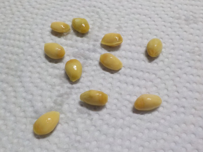
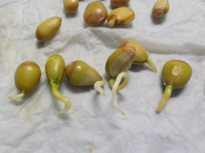
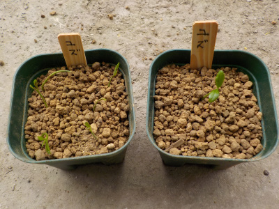
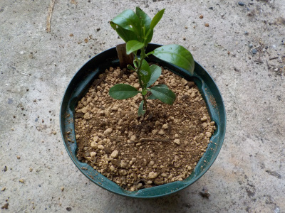

柚子の種を育てることにしました。
更新日 : 2020/01/17

柚子の実生は実が出来るまでに長期間掛かるので、買った方がいい的な意見が多いと思います。
実際はどうなんでしょうね。
売り物だって地植えにしたら何年も実が出来ないので同じじゃないの？とか思ったりします。
今ある柚子の予備用に育てようと思います。
更新日 : 2020/01/17

柚子の実生は実が出来るまでに長期間掛かるので、買った方がいい的な意見が多いと思います。
実際はどうなんでしょうね。
売り物だって地植えにしたら何年も実が出来ないので同じじゃないの？とか思ったりします。
今ある柚子の予備用に育てようと思います。
2020/02/29

柚子の種から根っこが出ました。
芽が出たら植え替えしようと思います。
更新日 : 2020/04/18

1つは1本だけ、残りはまとめて植えました。
更新日 : 2021/05/15

ゆずの木を大きくしたいので鉢を大きくしました。
これで日当たりの良い場所に置いてもある程度耐えれるでしょう。
柚子の木が家にあると柚子食べ放題です。